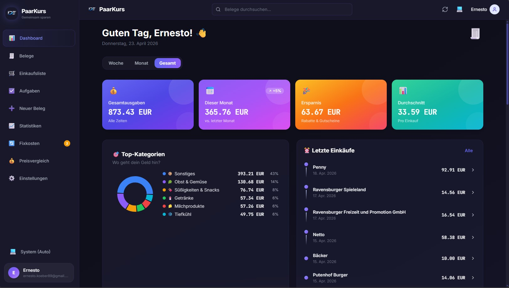
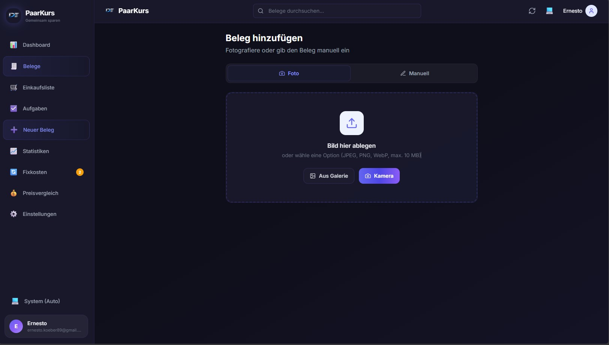
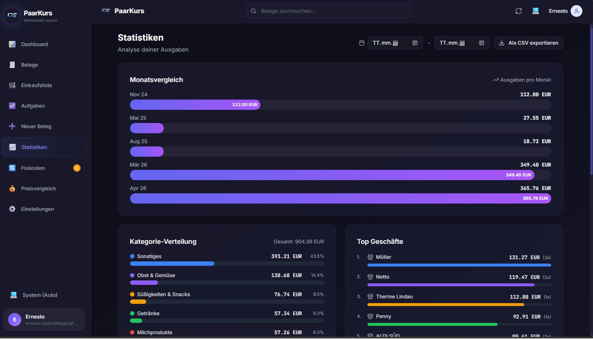

Verantwortung
Konzept, Frontend, Backend, Deployment
Zeitraum
Seit Q1 2026
Status
Abgeschlossen · im Einsatz
Projektbeschreibung
PaarKurs ist eine Finanz-Management-App für Haushalte und Paare. Sie ermöglicht das gemeinsame Erfassen, Auswerten und Kategorisieren von Ausgaben — vom Beleg-Scan über das Dashboard bis hin zu Spar-Tipps auf Basis der eigenen Ausgabenanalyse.
Klassische Frontend-Backend-Architektur: React-SPA als Single Page Application, FastAPI-API als asynchrones Backend, PostgreSQL und Redis als Datenebene. KI-basierte Bonerkennung über Gemini Vision mit Tesseract OCR als Offline-Fallback. Vollständig offlinefähig durch IndexedDB-Sync.
Technischer Ansatz
- ° React 18 + TypeScript + Vite als Frontend-Toolchain
- ° Tailwind CSS für Styling, Zustand für State, TanStack Query für Server-State, Recharts für Visualisierungen
- ° FastAPI mit asynchronem SQLAlchemy als Backend
- ° PostgreSQL als Hauptdatenbank, Redis für Cache und Sessions
- ° Gemini Vision API für KI-basierte Bonerkennung, Tesseract OCR als Fallback
- ° Cloudflare Pages für Frontend-Hosting, Railway für Backend und Datenbank
- ° IndexedDB für Offline-Speicher mit automatischer Synchronisation
Features
- ° Beleg-Upload mit KI-basierter Texterkennung (Gemini Vision, Tesseract-Fallback)
- ° Haushalt-Sharing: beide Partner sehen alle Transaktionen und können sie bearbeiten
- ° Dashboard mit KPIs (Ausgaben, Ersparnis, Top-Kategorien, Partner-Aktivitäts-Feed)
- ° Einkaufsliste, ToDo-System mit Prioritäten und Fixkosten-Tracker
- ° Spar-Tipps basierend auf Ausgabenanalyse, Preisvergleich und Budget-System
- ° Offline-Modus mit IndexedDB und automatischer Synchronisation
Schwerpunkte
Architektur: Saubere Trennung zwischen React-SPA-Frontend (Cloudflare Pages) und asynchroner FastAPI-API (Railway). PostgreSQL als Source of Truth, Redis für Cache und Sessions, Railway-Volume für Bild-Assets.
KI-Integration: Bonerkennung primär über Gemini Vision; bei großen Bildern oder Ausfall greift Tesseract OCR als deterministischer Fallback. Damit bleibt die Texterkennung auch ohne Cloud-Verbindung nutzbar.
Offline-First: Alle Eingaben werden lokal in IndexedDB persistiert und im Hintergrund mit dem Backend synchronisiert. Der Nutzer bleibt auch ohne Verbindung handlungsfähig.
Shared-State für zwei Nutzer: Haushalt-Sharing-Logik mit Partner-Aktivitäts-Feed, sodass beide Partner die jeweils aktuellen Daten sehen, ohne dass Benachrichtigungen oder Push-Logik nötig sind.
Aktueller UI-Stand


